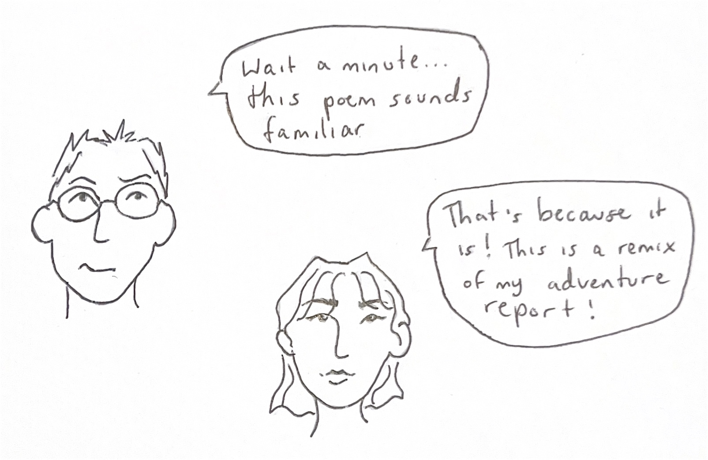

I walk by a long and desolate field
I hear a whisper, quiet at first
The field looks back at me
And the call grows louder
I feel it pulling me to run through its expanse
It aches to be touched
Now that the snow has melted away
It calls to me to bring my feet upon it
To satiate its wanton desire left unfulfilled by the distant sun
It beseeches me for urgency and speed
For renewed life and vigor
The break in the stone wall seems to beckon me to cross its threshold
To acquaint myself with the tired grass
To be its company as we wait with arms outstretched
For the sun to come near
I am overwhelmed, suddenly, at the roaring silence
It fills me as I run from it
I do not stop until I reach the church on Gun Hill road
Until all I can hear is my own breath in my ears
Even the sun seems to have forgotten the call of the field

To me this piece makes more sense as a poem. It was easy for me to transform it because I cut down all of the fluff around the main point of the piece. My writing style in this poem is heavily inspired by, or simply is, lyric poetry. It divulges the conscience of the narrator through outward description of a landscape. I was also inspired by sonnets and the way they typically end with a line that focuses the theme of the poem, typically by resolving whatever the conflict of the sonnet is. My final line does not necessarily resolve the conflict, but it resolves the poem itself and the message I found in my poem.
Yes, I mean the message I found, not the message I created. Sometimes when I begin writing a poem I am inspired by something, for example, a field. I’m not sure exactly what I want to say, I’m just figuring out how to express a feeling. Through that expression, I come to an understanding of the thought or feeling that inspired the poem. And so, this makes more sense to me as a poem because I do not think all of the extra narrative surrounding the main idea is necessary to reach the sonnet-like resolution of a final line.
While I prefer the poem to the original short story, each has a different function and produces a different result. The short story is a longer narrative, and it gives more insight into the narrator, aka me. I include personal details like why I am embarking on the adventure, and even the name of the state I am in. This contextualizes the short part that I extracted for the poem. I don’t think it necessarily changes the meaning, but perhaps with the context it is more apparent why my journey took the turn it did. In the short story I say that I am looking for an adventure. It is clear I have a sense of wanderlust and that I take inspiration from nature. I’d like to think the poem does a good job of showing instead of telling this, as I lay it out quite clearly in the story, but I want those characteristics to still come across in the poem. However, stating them directly leaves no room for interpretation about why I am on this walk, and how I came upon the field. I also took even more creative liberty with the short story to make it more of a complete story. I’ll acknowledge that my adventure doesn’t sound like much of an adventure on paper, it was just a walk through a small town. But the writer in me took inspiration from the landscape, and I ran with it a bit more in the longer story.
Ultimately, I am glad to have written both versions of this story, both as a poem and as an adventure report. I can’t explain why but as we have discussed remixes in class, one of my favorite songs has been stuck in my head, or rather, its remix. Homemade Dynamite by Lorde, ft. Khalid, Post Malone, and SZA is one of my exceptions where I greatly prefer a remix to the original song, and when I listen to the original something feels missing now that I have heard the new version. But the remix would not exist without the original song, and neither would my poem without the original story.